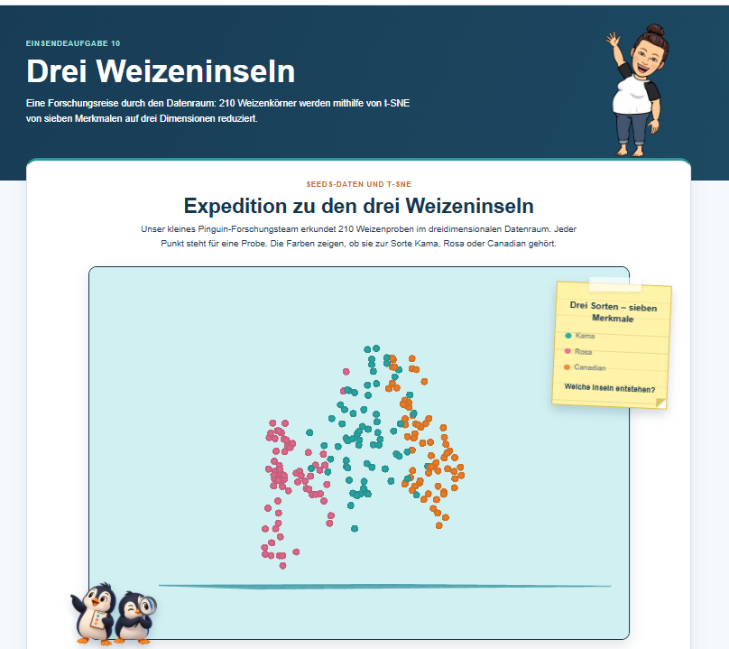
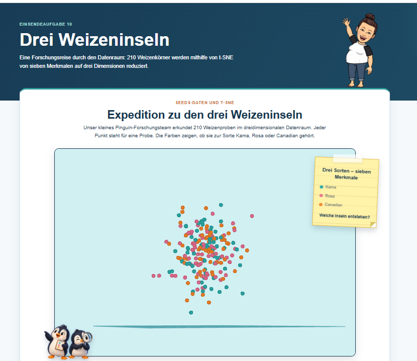
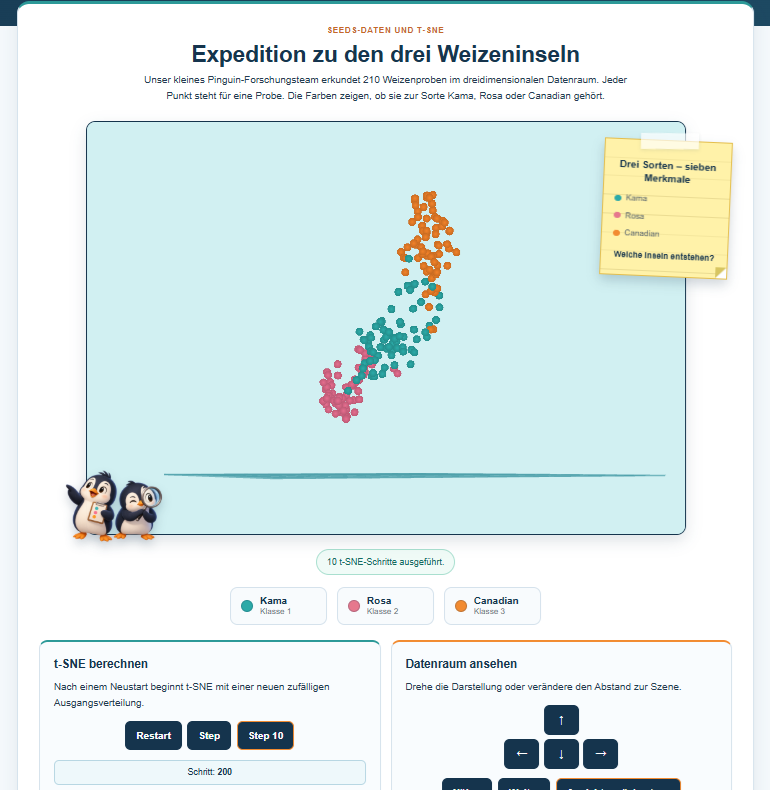
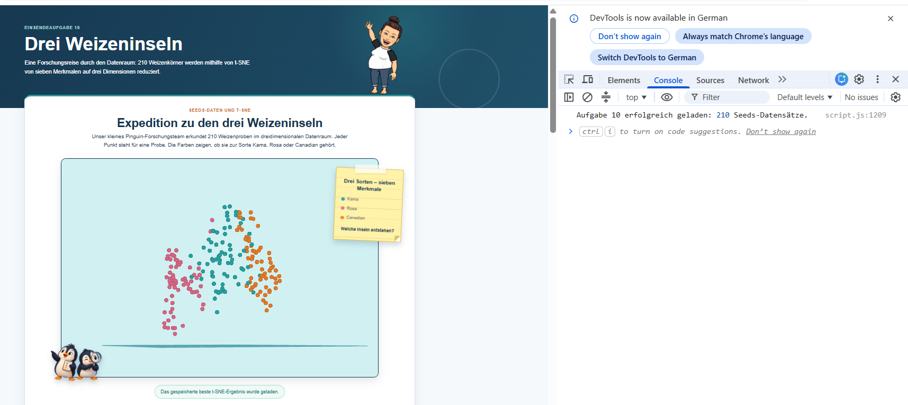

t-SNE berechnen
Nach einem Neustart beginnt t-SNE mit einer neuen zufälligen Ausgangsverteilung.
Schritt: Gespeichertes Ergebnis
Einsendeaufgabe 10
Eine Forschungsreise durch den Datenraum: 210 Weizenkörner werden mithilfe von t-SNE von sieben Merkmalen auf drei Dimensionen reduziert.
Seeds-Daten und t-SNE
Unser kleines Pinguin-Forschungsteam erkundet 210 Weizenproben im dreidimensionalen Datenraum. Jeder Punkt steht für eine Probe. Die Farben zeigen, ob sie zur Sorte Kama, Rosa oder Canadian gehört.
Die gespeicherte beste Darstellung wird geladen.
Nach einem Neustart beginnt t-SNE mit einer neuen zufälligen Ausgangsverteilung.
Schritt: Gespeichertes Ergebnis
Drehe die Darstellung oder verändere den Abstand zur Szene.
Kamera: Ausgangsposition
Alle Funktionen können zusätzlich über die sichtbaren Schaltflächen bedient werden.
Drei Sorten im Datenraum
Die Farben helfen dabei, die Sorten auch während der schrittweisen Berechnung auseinanderzuhalten.
Die erste Sorte wird in Türkis dargestellt. Ihre 70 Proben bilden die erste Insel im dreidimensionalen Datenraum.
Die zweite Sorte erhält passend zu ihrem Namen einen Rosaton. Auch sie besteht aus 70 einzelnen Proben.
Die dritte Sorte wird in Orange gezeigt. Gemeinsam ergeben die drei Klassen insgesamt 210 Datenpunkte.
Informationen zur Umsetzung
Wie aus sieben Eigenschaften eine dreidimensionale und interaktive Darstellung entsteht.
Für die letzte Einsendeaufgabe wollte ich das wiederkehrende Reisethema fortführen. Aus den drei Weizensorten werden drei Weizeninseln, die im Datenraum erkundet werden können.
Die drei Farben unterscheiden die Klassen deutlich voneinander. Das Pinguinmotiv bleibt als kleiner Forschungsbegleiter erhalten, während die Daten selbst im Mittelpunkt stehen.
Der Seeds-Datensatz enthält 210 Proben. Jede Probe besitzt sieben numerische Eigenschaften und gehört zu einer von drei Weizensorten.
Die CSV-Datei wird automatisch geladen und mit Papa Parse in ein JavaScript-Array umgewandelt. Die Klassenangabe wird dabei getrennt von den sieben Merkmalen gespeichert.
t-SNE reduziert die sieben Merkmale jeder Probe auf drei räumliche Koordinaten. Dabei versucht der Algorithmus, ähnliche Datensätze nah beieinander anzuordnen.
Vor der Berechnung werden die Merkmale standardisiert. Dadurch erhält kein Merkmal nur wegen eines größeren Zahlenbereichs ein zu starkes Gewicht.
Für die Startansicht wurden mehrere t-SNE-Berechnungen mit standardisierten Seeds-Daten verglichen. Das am deutlichsten getrennte Ergebnis wurde anschließend als CSV-Datei gespeichert und wird beim Öffnen der Anwendung automatisch geladen.
Die gespeicherte Startdarstellung wurde offline mit der t-SNE-Implementierung von scikit-learn berechnet. Für die direkt auf der Webseite gestarteten Neuberechnungen wird tSNEJS verwendet. Durch Restart beginnt diese interaktive Berechnung mit einer neuen zufälligen Verteilung bei Schritt 0.
Die Punkte werden mit WebGL im dreidimensionalen Raum dargestellt. Die Ansicht kann über die Pfeiltasten gedreht werden. Mit N und Shift-N wird der Kameraabstand verändert.
Der aktuelle Berechnungsschritt wird auf der Webseite angezeigt. Die Bedienung funktioniert sowohl über die Tastatur als auch über die sichtbaren Schaltflächen.
Grundlage für den Seeds-Datensatz ist das Material der Lerneinheit DIM sowie das Seeds-Archiv des UCI Machine Learning Repository.
Zum Einlesen der CSV-Datei verwende ich Papa Parse . Die Verwendung orientiert sich an der Lerneinheit DAT.
Für die Dimensionsreduktion verwende ich tSNEJS von Andrej Karpathy . Die schrittweise Berechnung orientiert sich an der Lerneinheit DIM.
Für die Auswahl der gespeicherten Startdarstellung wurde ergänzend die t-SNE-Implementierung von scikit-learn verwendet. Die interaktive Neuberechnung innerhalb der Webseite erfolgt mit tSNEJS.
Die Webseite ist Schritt für Schritt in Visual Studio Code entstanden und wurde während der Umsetzung mehrfach an meine Gestaltungsidee angepasst. Bei einzelnen Fragen zur Seitenstruktur, zu JavaScript und bei der Fehlersuche habe ich ergänzend ein KI-gestütztes Sprachmodell genutzt. Verwendete Hinweise habe ich nachvollzogen, selbst angepasst und anschließend in der fertigen Anwendung getestet.
Die Anwendung wurde in Google Chrome getestet. Zusätzlich wurde die Entwicklerkonsole auf Fehlermeldungen geprüft.
Entstehungsprozess
Die Screenshots zeigen die gespeicherte Startansicht, den Neustart des Algorithmus und die anschließende schrittweise Berechnung.

Direkt nach dem Laden zeigt die Anwendung die zuvor gespeicherten 3D-Koordinaten. Die drei Weizensorten sind bereits deutlich voneinander getrennt.

Nach dem Neustart beginnt t-SNE mit einer neuen zufälligen Verteilung. Zu diesem Zeitpunkt liegen die drei Klassen noch weitgehend vermischt beieinander.

Durch die einzelnen Iterationen ordnet t-SNE ähnliche Proben zunehmend näher beieinander an. Die Klassen beginnen sich im dreidimensionalen Raum zu trennen.

Zum Schluss wurden die Bedienung, das Laden der CSV-Dateien und die Darstellung in Google Chrome getestet. In der Entwicklerkonsole sind keine roten Fehlermeldungen zu sehen.